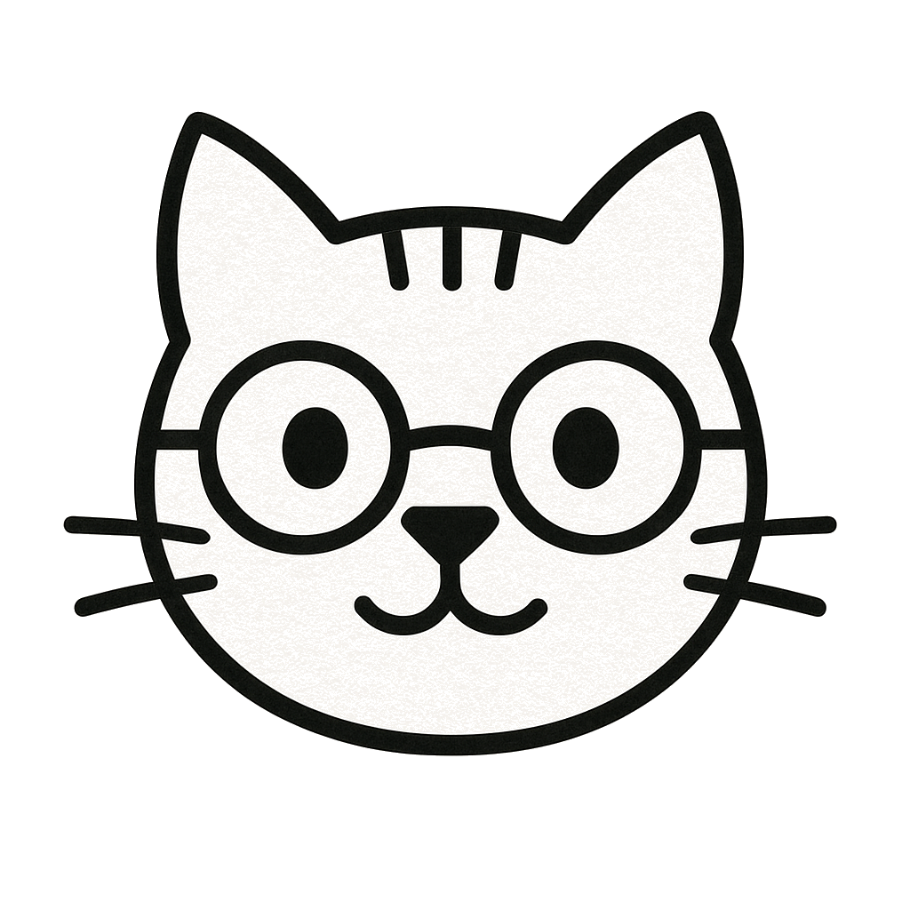

Spec Kitty
Primary lockup · cream paper · 48px mark / 26px wordmark
Spec Kitty
Compact lockup · 28px mark / 16px wordmark
Mark only · 200px (canonical 1024×1024 master, downsamples cleanly)
Spec Kitty
Inverted lockup · dark surface (mark inverted)